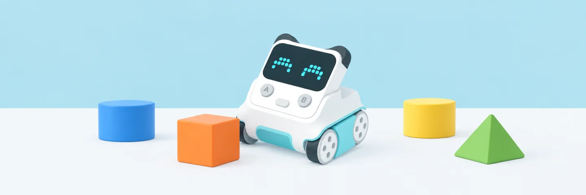
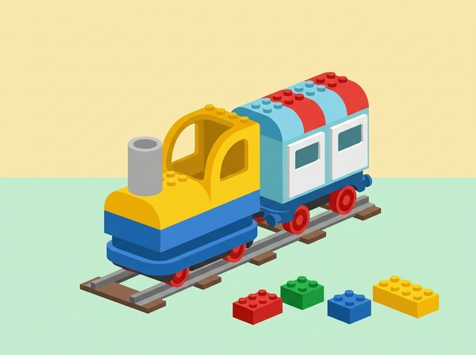
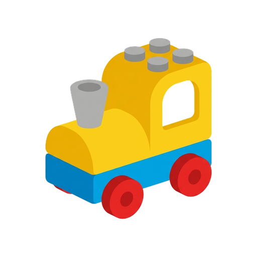
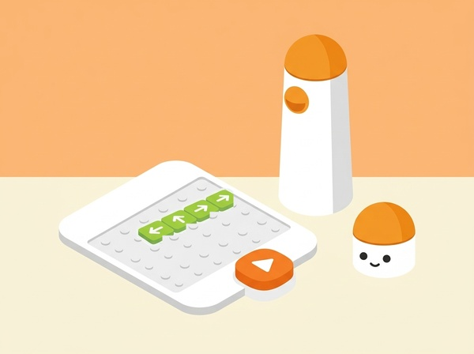
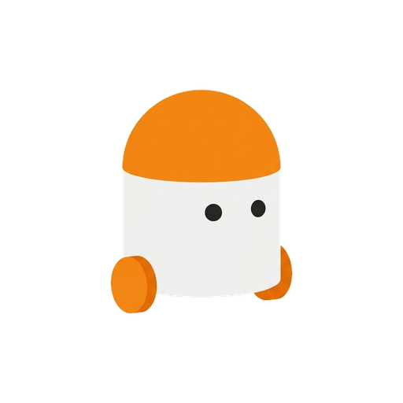
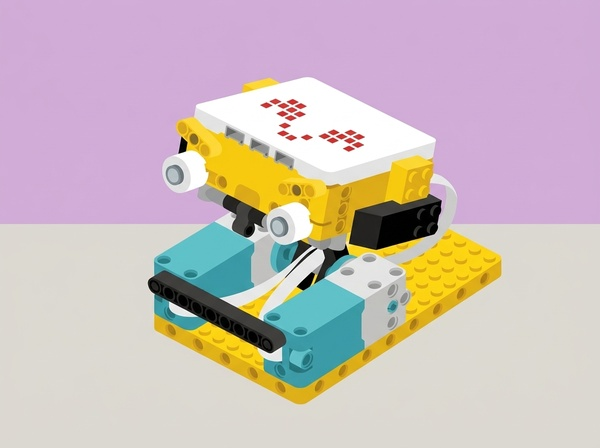
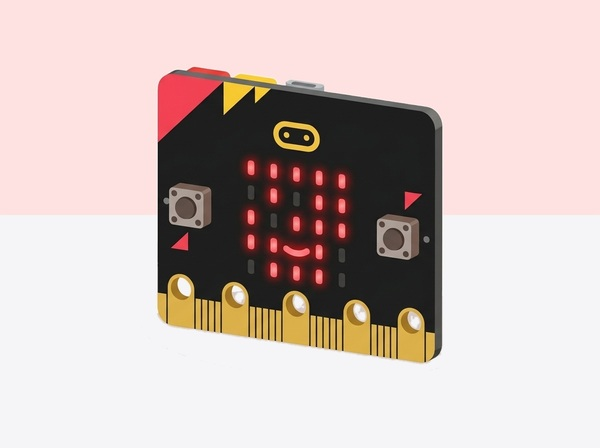

Robòtica Educativa
Selecciona un robot per accedir a la seva pàgina d'aprenentatge i tutorials específics.

Quin robot triar? Comença pel concepte que vols treballar i els materials disponibles. Un tren que reacciona a peces, un robot de terra i una placa amb sensors proposen maneres diferents de fer visible el codi.


Coding Express
El tren interactiu dels colors i el pensament computacional primerenc

TaleBot
El robot narrador que parla, llegeix mapes interactius i dibuixa


CodingSet
Programació tangible sense pantalles amb Matatalab

CodeyRocky
El robot amb pantalla LED 16 × 8, sensors i moviment amb orugues

Spike
Mecatrònica, engranatges i sensors d'alta precisió de LEGO Education

Microbit
La placa microcontroladora per a projectes oberts i ciutadans